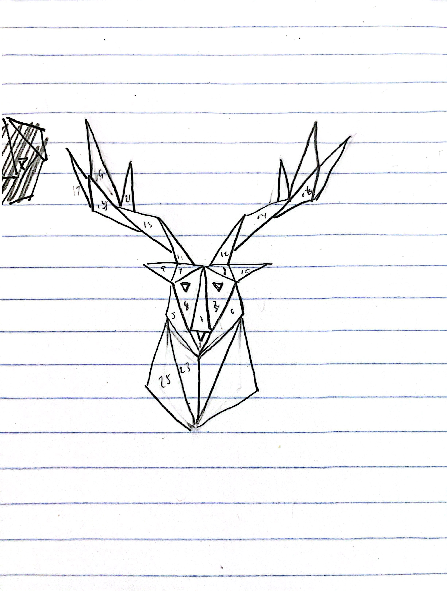

XXX
Red
Green
Blue
Size
Segment
Drawing Reference

AWESOMENESS:
Everytime "Random Color Change" button is clicked, all shapes on the canvas change to a random color.
After "Random Color Change" button is clicked, the canvas enters "Random Color mode".
While this mode is active, everytime a new shape is added to the canvas, all shapes on the canvas will change to a random color.
Use "Disable Random Color Change" button to disable this mode and the canvas would return to original paint program.